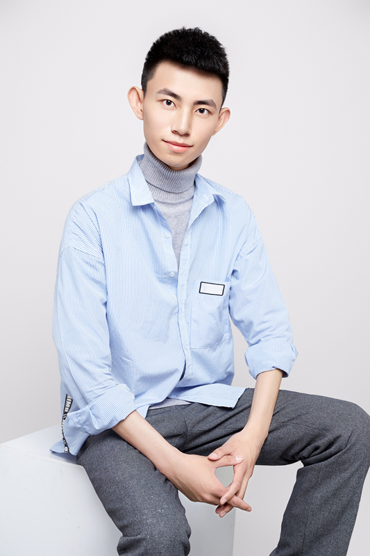

Xiang Chen陈翔Ph.D Student
Intelligent Media Analysis Group (IMAG), |
 |
I am currently a first-year Ph.D. candidate in School of Computer Science and Engineering, Nanjing University of Science and Technology, advised by Prof. Jinshan Pan. Before that, I received my M.S. degree from School of Electronic Information Engineering, Shenyang Aerospace University in 2022, co-advised by Prof. Yufeng Li and Dr. Yufeng Huang, and received my B.E. degree from School of Information Science and Engineering, Dalian Polytechnic University in 2019. My research interest includes low-level computer vision and image processing. If you want to cooperate with me, kindly contact me via email.
[2022/07] One paper is accepted by ECCV 2022. 2022
Unpaired Deep Image Deraining Using Dual Contrastive Learning
Unpaired Deep Image Dehazing Using Contrastive Disentanglement Learning
Hybrid High-Resolution Learning for Single Remote Sensing Satellite Image Dehazing
Memory-Oriented Unpaired Learning for Single Remote Sensing Image Dehazing
Unpaired Image Dehazing with Physical-Guided Restoration and Depth-Guided Refinement
A Deep Hourglass-Structured Fusion Model for Efficient Single Image Dehazing
Single-Stage Detector with Dual Feature Alignment for Remote Sensing Object Detection
Focus on Local: Transmission Line Defect Detection via Feature Refinement
Deep Scale-space Mining Network for Single Image Deraining
TARDet: Two-stage Anchor-free Rotating Object Detector in Aerial Images 2021
Multi-Scale Hourglass Hierarchical Fusion Network for Single Image Deraining
A Coarse-to-Fine Two-Stage Attentive Network for Haze Removal of Remote Sensing Images
Single Image Desmoking via Attentive Generative Adversarial Network for Smoke Detection Process
Single Remote Sensing Image Dehazing Using a Dual-step Cascaded Residual Dense Network 2020
Multi-Scale Attentive Residual Dense Network for Single Image Rain Removal
[2021-2025] China Youth Innovation and Entrepreneurship Funding Program, PI
[2022/07] Outstanding College Student Party Member Pacesetter of Liaoning Province (10 awardees in total)
Technical Program Committee Member
Conference/Journal Reviewer
Association Member
Cooperation & Communication
Latest News
[2022/03] One paper is accepted by CVPR 2022.
Publications [Google Scholar]
Xiang Chen, Jinshan Pan, Kui Jiang, Yufeng Li, Yufeng Huang, Caihua Kong, Longgang Dai, Zhentao Fan
IEEE Conference on Computer Vision and Pattern Recognition (CVPR), pp. 2017-2026, 2022.
[paper][arXiv][project]
Xiang Chen, Zhentao Fan, Pengpeng Li, Longgang Dai, Caihua Kong, Zhuoran Zheng, Yufeng Huang, Yufeng Li
European Conference on Computer Vision (ECCV), accepted, 2022.
[paper][arXiv]
Xiang Chen, Yufeng Li, Longgang Dai, Caihua Kong
IEEE Geoscience and Remote Sensing Letters (IEEE GRSL), vol. 19, 2022.
[paper]
Xiang Chen, Yufeng Huang
IEEE Geoscience and Remote Sensing Letters (IEEE GRSL), vol. 19, 2022.
[paper][code]
Xiang Chen, Yufeng Li, Caihua Kong, Longgang Dai
IEEE Signal Processing Letters (IEEE SPL), vol. 29, pp. 587-591, 2022.
[paper][code]
Yufeng Li, Xiang Chen*, Caihua Kong, Longgang Dai, Yufeng Huang
Multimedia Tools and Applications (MTAP), 2022.
[paper][code]
Yufeng Li, Caihua Kong, Longgang Dai, Xiang Chen
IEEE Geoscience and Remote Sensing Letters (IEEE GRSL), vol. 19, 2022.
[paper]
Yufeng Li, Longgang Dai, Hongxia Ni, Caihua Kong, Xiang Chen
Signal, Image and Video Processing (SIVP), 2022.
[paper]
Pengpeng Li, Jiyu Jin, Guiyue Jin, Lei Fan, Xiao Gao, Tianyu Song, Xiang Chen
IEEE Conference on Computer Vision and Pattern Recognition Workshops (CVPRW), pp. 4276-4285, 2022.
[paper]
Longgang Dai, Hongming Chen, Yufeng Li, Caihua Kong, Zhentao Fan, Jiyang Lu, Xiang Chen
IEEE Conference on Computer Vision and Pattern Recognition Workshops (CVPRW), pp. 4267-4275, 2022.
[paper]
Xiang Chen, Yufeng Huang, Lei Xu
IEEE Conference on Computer Vision and Pattern Recognition Workshops (CVPRW), pp. 872-879, 2021.
[paper]
[arXiv]
Yufeng Li, Xiang Chen*
IEEE Geoscience and Remote Sensing Letters (IEEE GRSL), vol. 18, no. 10, pp. 1751-1755, 2021.
[paper]
[code]
Yufeng Huang*, Xiang Chen*, Lei Xu, Kaiyuan Li
Fire Technology (Fire Technol), vol. 57, pp. 3021–3040, 2021.
[paper]
Yufeng Huang^, Xiang Chen^ (^ joint first authors)
IEEE International Conference on Image Processing (ICIP), pp. 3852-3856, 2021.
[paper]
[code]
Xiang Chen, Yufeng Huang, Lei Xu
Asian Conference on Computer Vision (ACCV), vol. 12623, pp. 286-300, 2020.
[paper]
[code]
Fundings
Honors & Awards
[2022/06] Outstanding Graduate of Liaoning Province
[2021/12] Top 5 Prize in China of the iCAN Innovation Contest
[2021/10] Chinese National Scholarship
[2021/09] Second Prize of Excellent Report of the 1st Graduate Academic Forum of Chinese Journal of Image and Graphics
[2021/08] Person of the Year, Huayu College Student of Liaoning Province (20 awardees in total)
[2021/07] National Bronze Prize of the 7th "Internet+" College Student Innovation and Entrepreneurship Competition
[2021/05] Second Prize of master group of the 1st CCF/YEF Outstanding College Student Academic Show
[2020/09] National Bronze Prize of the 12th "Challenge Cup" College Student Entrepreneurship Planning Competition
Professional Activities